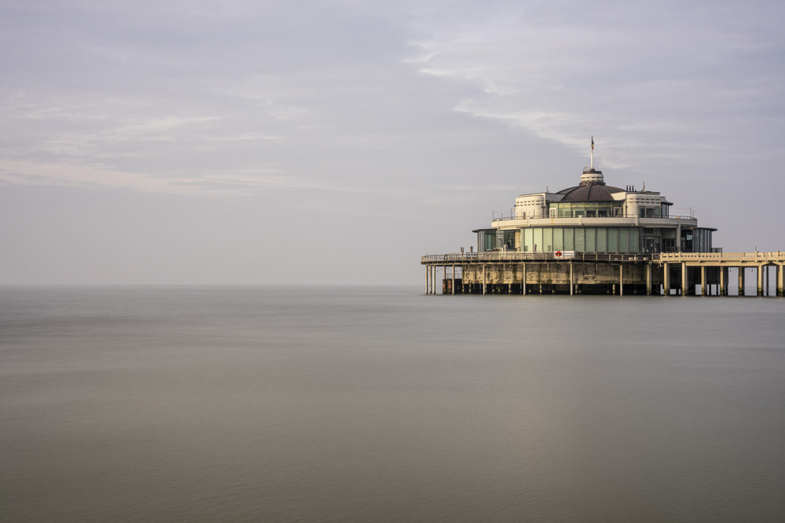

Waar water en lucht in elkaar overvloeien, lijkt de wereld even stil te staan. Een eenzaam gebouw wordt het middelpunt van pure verstilling.

◉ f/11 ⏱ 30 sec ▭ ISO 400 ◁ 200 mm
Waar water en lucht in elkaar overvloeien, lijkt de wereld even stil te staan. Een eenzaam gebouw wordt het middelpunt van pure verstilling.
Leie, Oudenaarde - Oost-Vlaanderen
Mist over de Leie
Pier van Blankenberge
Kerk van Brakel